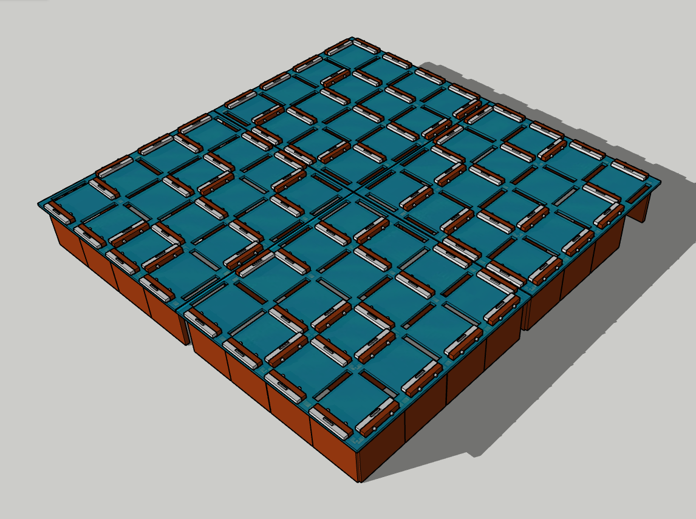
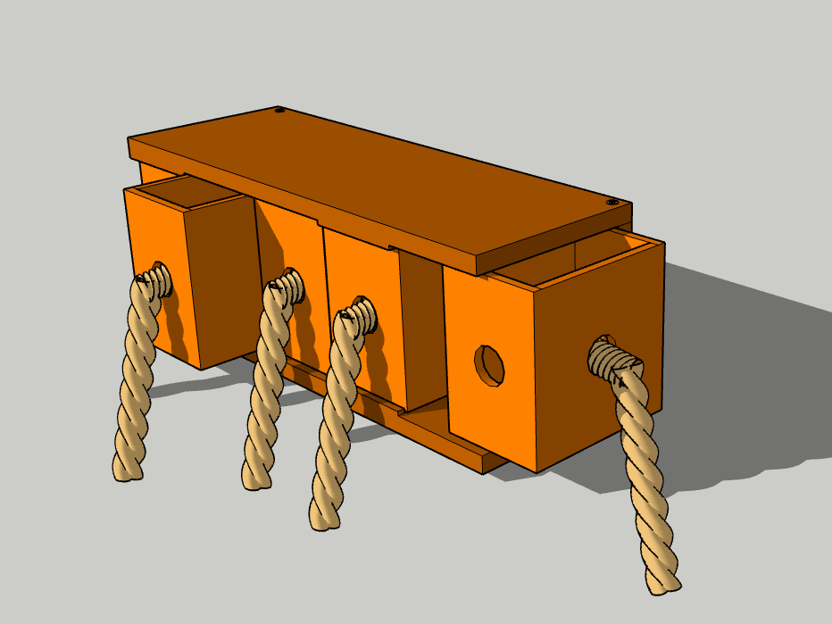
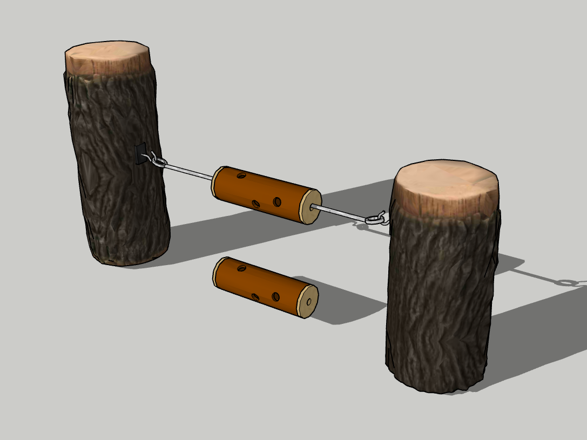
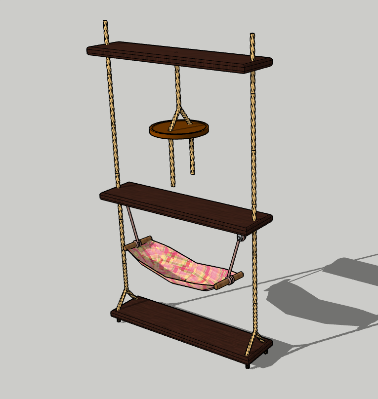
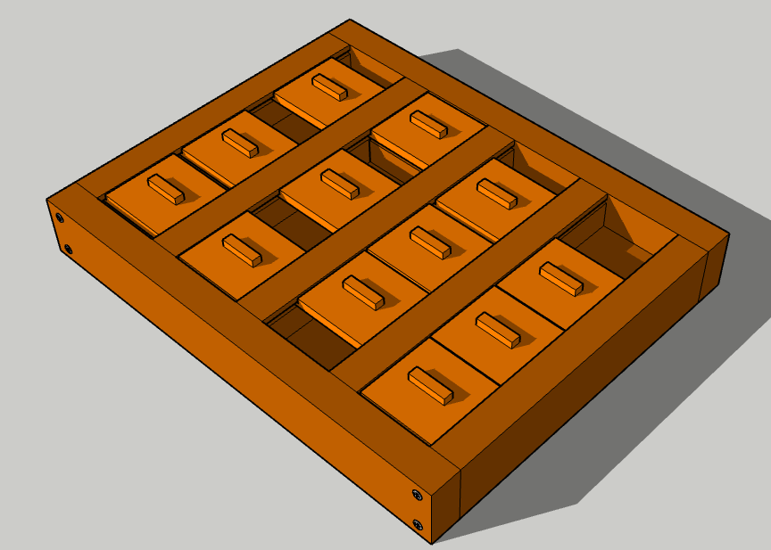
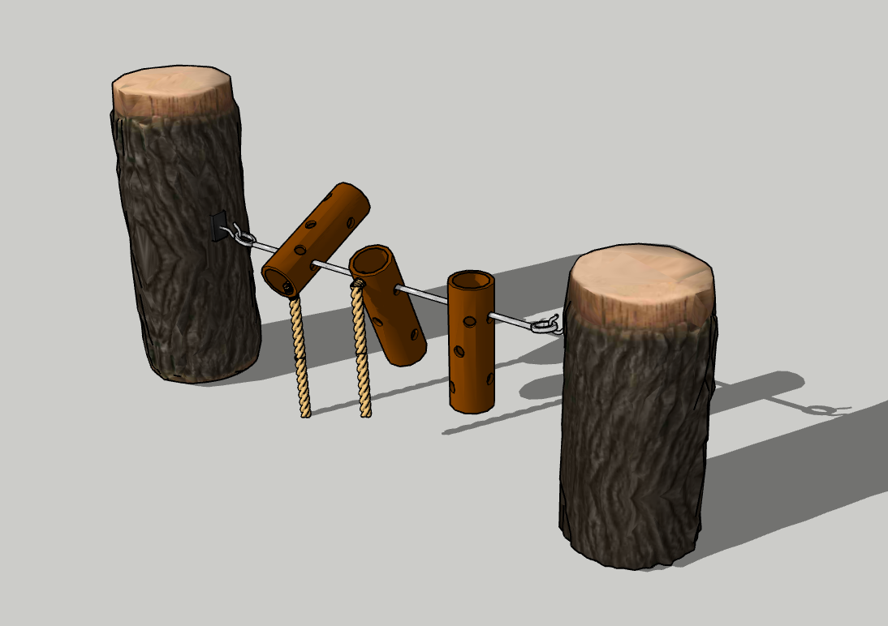

Tau-Zieh-Würfel
Ein Spielzeug welches den Geruchssinn und die Zugkraft der Zwergmangusten herrausfordert.
3D-Tau-Zieh-Würfel ansehen

Futter-Rolle
Futter aus dem Napf zu fressen ist einfach, die Futter-Rolle macht das deutlich interessanter.
3D-Futter-Rolle ansehen

Kletterschaukel
Eine große Schaukel auf der die Zwergmangusten herumklettern und sich ausruhen können.
3D-Kletterschaukel ansehen

Mangusten-Sudoku
Eine Maßnahme, um den Grips der Zwergmangusten anzuregen. Außerdem müssen die Mangusten hier ihren Geruchssinn und ihre Fingerfertigkeit unter Beweis stellen.
Mehr über das Mangusten-Sudoku
3D-Mangusten-Sudoku ansehen

Umdreher
Diese Maßnahme ist nicht nur für die Zwergmangusten etwas, hier kann auch der Togo mitmachen und versuchen das Futter aus den Röhren zu bekommen.
3D-Umdreher ansehen